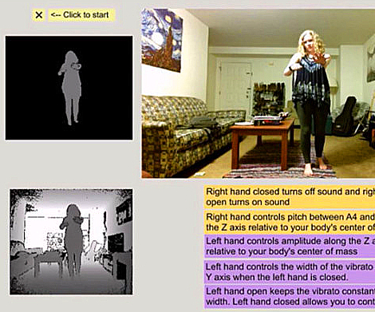
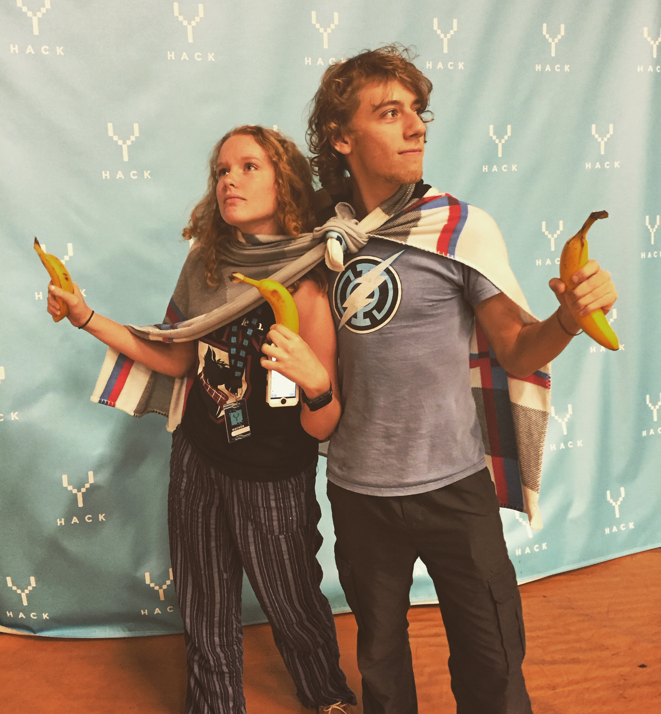
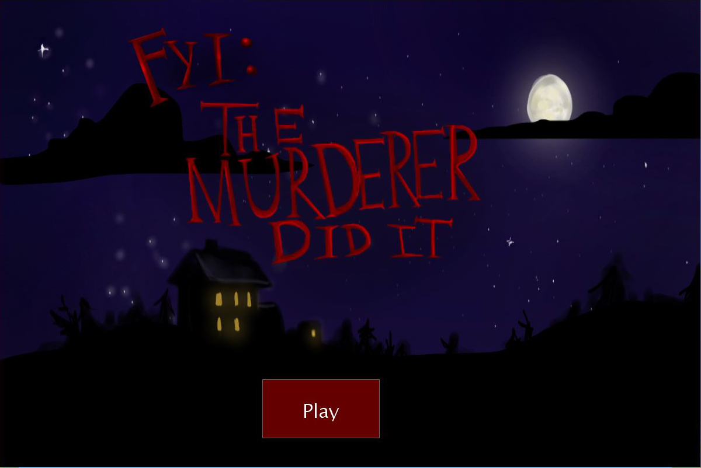

RobOrchestra
Tech: Arduino, Hardware, Java, Max MSP, MIDI
Git: https://github.com/CMU-Robotics-Club/RobOrchestra
RobOrchestra is an ongoing project in the Carnegie Mellon Robotics Club that aims to explore the creative possibilities for robotic instruments. We design, build and program robots that read music from MIDI data in order to put on musical performances. Our goal is to create a full robotic orchestra that is able to play from arrangements from standard MIDI files, and is also able to "improvise" unique polyphonic music in real time based off of music generation algorithms developed by our team. Currently, our orchestra consists of XyloBot, BassBot, SnareBot and UkuleleBot, and has performed at several campus events at Carnegie Mellon including Spring Carnival and RoboClub Late Night.

Can your Smartphone Touch you Back? Rendering Haptic Textures from Friction on Android OS
Tech: MySQL, Matlab, Java, Android
Git: https://github.com/Satrat/Virtual-Textures
This research project, under the supervision of Dr. Roberta Klatzky, explored the possibilities of incorporating haptic feedback into smartphone and tablet applications. We worked with a device that utilizes haptic technology, the Senseg "Feelscreen" tablet, to investigate its use for virtual textures. The tablet gives the user haptic feedback by varying friction impulses depending on how the user's finger is moving. We first investigated human response to these virtual textures, and after seeing positive results designed a keyboard application that uses various texture gradients to allow the user to find their direction of movement and "swipe type" on the keyboard without having to look at the screen. Our research was presented at the Meeting of the Minds research symposium in the Spring of 2016.
The Kinect Theremin
Tech: Kinect, C++, Max MSP
Git: https://github.com/Satrat/Kinect-Theremin
The Kinect Theremin is an application developed for the Microsoft Kinect that allows the user to create expressive music using their own body as an instrument. Based on the instrument patented by Leon Theremin in 1928, the Kinect Theremin produces a spooky, alien-like sound that is often found in science fiction and horror movies. The user can move their limbs around in order to manipulate the pitch, volume and timbre of this electronic instrument. The Kinect Theremin also responses to several different hand shapes that can be used to start and stop sound production.
Resume Parser and Classifier
Tech: Python
Git: https://github.com/Satrat/Resume-Parser
This hackathon project, developed at YHacks 2015, parses PDF resumes and sorts them by score in a Latex document with a summary of each participant for easy review of top candidates. Our algorithm parses a resume by splitting it into generic categories such as work experience, projects, leadership and activities, and assigning each candidate points based off of their performance in each category. This parser is unique, because it does more than simply give a general score for a candidate. It analyzes a resume to determine the best job category for the applicant, and then adjusts the applicants score based off of performance in parameters that are unique to each job category.

Improvisation with Artificial Intelligence Accompaniment
Tech: Max MSP
Git: https://github.com/Satrat/AI-Improvisation
This Max MSP patch uses real time pitch detection to track an improvised solo through microphone input. The patch uses L-systems to algorithmically generates two harmony lines to accompany the soloist's performance. As the soloist varies between high, mid, and low range pitches, the "grammatical rules" of the L-systems change, allowing the soloist to loosely control the harmonic line by deliberately playing in certain pitch ranges. This artificial intelligence accompanist performed with a viola soloist at the Frank-Ratchye Studio for Creative Inquiry in April 2016.
Project Ignite Murder Mystery Game
Tech: Java, Adobe PhotoShop
Git: https://github.com/Satrat/Project-Ignite-2016
Project Ignite is a student run outreach organization at Carnegie Mellon University offering an interdisciplinary project-based educational program for high school students in the greater Pittsburgh area. In Spring 2016, the Programming with Art and Sound group worked with Carnegie Mellon mentors to create a point and click murder mystery video game. The high school students came in with little to no programming experience, and learned how to create animations, write music generation algorithms, and design gameplay throughout a series of workshops. The group's finished product that was presented and demoed at the Project Ignite Showcase in April 2016.
Saradkins.xyz
Tech: HTML, CSS, Adobe Illustrator
Git: https://github.com/Satrat/Saradkins.xyz
This website, which you are currently visiting, was developed from scratch using HTML and CSS. All icons were created using Adobe Illustrator. It was created to act as a portfolio to showcase all of my programming, audio engineering, sound design and music performance projects, and to serve as an answer to a commonly received question "What on earth do you want to do with a double major in Computer Science and Music Technology?"